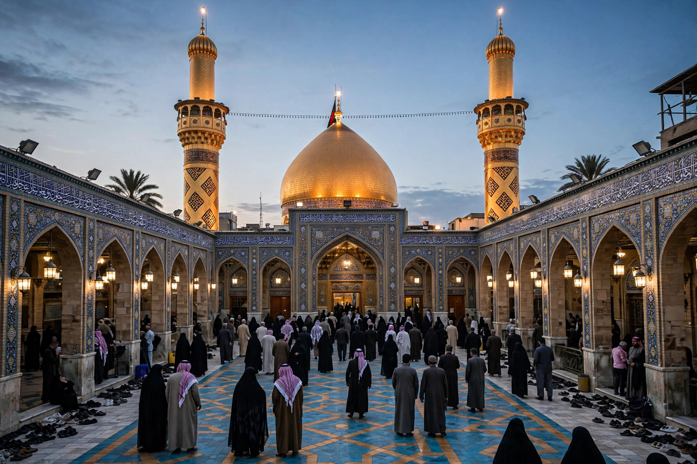

| Battle of Karbala | |
|---|---|
 | |
| Date | 10 October 680 CE (10 Muharram 61 AH) |
| Location | Karbala, Iraq |
| Result | Umayyad victory; Husayn and his companions killed |
| Belligerents | Forces of Husayn ibn Ali · Umayyad Caliphate (Yazid I) |
| Commanders | Husayn ibn Ali †; Abbas ibn Ali † · Umar ibn Sa'd; Shimr ibn Dhi al-Jawshan |
| Strength | c. 72 fighting men · c. 4,000–30,000 |
The Battle of Karbala took place on 10 October 680 CE (10 Muharram 61 AH) at Karbala, in present-day Iraq, between a small party led by Husayn ibn Ali, grandson of the Prophet Muhammad, and a much larger army of the Umayyad caliph Yazid I. Husayn and nearly all the men with him were killed. The battle is one of the most consequential events in Islamic history: for Shia Muslims it is the defining martyrdom of their faith, commemorated annually on Ashura, and it deepened the schism between Sunni and Shia Islam.
On the death of Muawiya I in 680, his son Yazid succeeded him as caliph and demanded an oath of allegiance from Husayn, who refused, regarding Yazid's succession as a violation of earlier agreements and his rule as unjust. Invited by the people of Kufa in Iraq to lead a rising, Husayn set out from Mecca with his family and a small band of followers. The Umayyad governor of Iraq, Ubayd Allah ibn Ziyad, crushed the Kufan movement before Husayn arrived — his envoy Muslim ibn Aqil was executed — and an Umayyad force under Umar ibn Sa'd intercepted Husayn's caravan at Karbala. Husayn's party was surrounded and cut off from the water of the Euphrates. Negotiations failed after Husayn refused unconditional submission, and on 10 Muharram the Umayyad army attacked.
Accounts describe Husayn's companions fighting and dying one by one, among them his half-brother Abbas, standard-bearer of the party, and his sons Ali al-Akbar and the infant Ali al-Asghar. Husayn himself was killed late in the day; tradition holds that Shimr ibn Dhi al-Jawshan's men struck the fatal blows and that Husayn's head was severed and carried to Kufa and then to Yazid in Damascus. The women and children of the party, including Husayn's sister Zaynab and his surviving son Ali Zayn al-Abidin, were taken captive to Damascus, where Zaynab's defiant speeches became a celebrated part of the Karbala narrative.
Karbala became one of the holiest cities of Shia Islam; Husayn's shrine draws millions of pilgrims, above all for Ashura and for Arbaeen, forty days later, one of the largest annual gatherings in the world. The passion plays (ta'ziya) and mourning rituals of Muharram retell the story each year. In Shia theology and political thought, Husayn's stand against a tyrant is the paradigm of martyrdom and resistance to injustice — the slogan "Every day is Ashura and every land is Karbala" — while Sunni tradition also venerates Husayn and condemns his killing, though the event is observed with less central ritual emphasis.
See also: Husayn ibn Ali · Ali · Ashura · Umayyad Caliphate